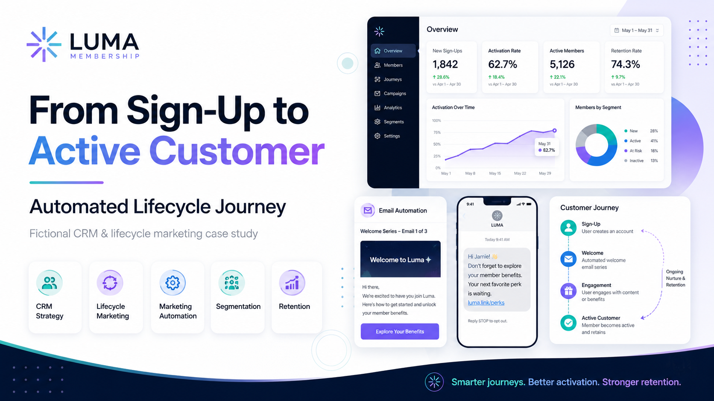
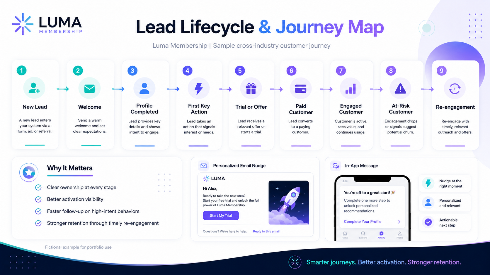
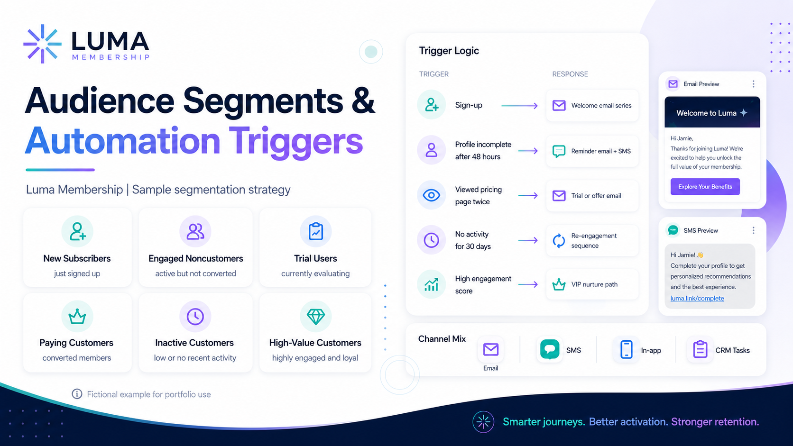
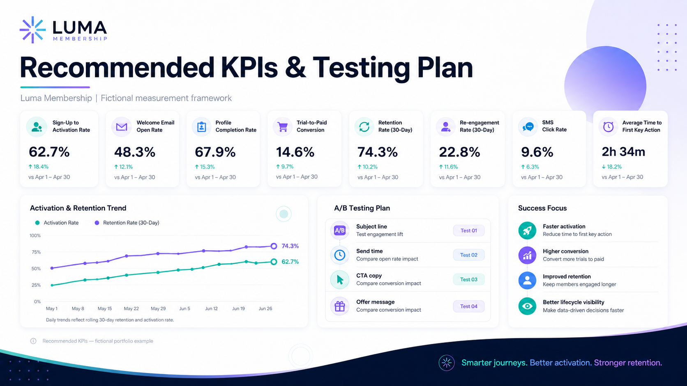

CASE STUDY / 09 · FICTIONAL PORTFOLIO PROJECT
From Sign-Up to
Active Customer
Automated Lifecycle Journey
A fictional lifecycle marketing case study exploring how customer data, behavioral triggers, segmentation, and automated communication can move a new lead toward activation, conversion, retention, and re-engagement.

Lifecycle strategy
built around behavior.
Luma Membership is a fictional membership platform used to demonstrate a cross-industry lifecycle marketing framework. The project focuses on how a business could organize its customer journey, identify meaningful customer behaviors, automate timely communication, and measure progression from sign-up through long-term engagement.
- Project Type
- Independent fictional portfolio case study
- My Role
- Lifecycle Marketing and CRM Strategist
- Business Model
- Membership and subscription platform
- Primary Channels
- Email, SMS, in-app messaging, and CRM tasks
- Core Skills
- Journey mapping, segmentation, automation logic, campaign strategy, retention, testing, and reporting
Designing around the customer,
not just the CRM.
The strategy begins with the customer experience. Luma’s audience includes people using the platform to discover resources, access benefits, connect with a community, and complete meaningful actions. The CRM system supports that experience by delivering relevant communication at the right stage instead of sending identical messages to every contact.
Generic communication
creates preventable drop-off.
A scalable framework
for customer movement.
Create a scalable lifecycle framework that moves customers from awareness to activation, conversion, engagement, retention, and re-engagement using customer behavior and CRM data.
Building a shared
customer lifecycle.

New Lead → Welcome → Profile Completed → First Key Action → Trial or Offer → Paid Customer → Engaged Customer → At-Risk Customer → Re-engagement
Each lifecycle stage represents a meaningful customer condition rather than a single marketing interaction. This gives marketing, sales, customer success, and operations teams a shared understanding of where each customer is and what action should happen next.
Clear stages
with clear meaning.
New Lead
A new contact enters the CRM through a form, advertisement, referral, event, or account registration.
Welcome
The contact enters the onboarding series and receives clear expectations and next steps.
Profile Completed
The contact provides key information that improves personalization and segmentation.
First Key Action
The contact completes the behavior most strongly associated with early product or membership value.
Trial or Offer
The contact begins evaluating the paid experience or receives a relevant conversion offer.
Paid Customer
The contact completes a purchase or begins a paid membership.
Engaged Customer
The customer demonstrates repeated activity and continued value.
At-Risk Customer
Engagement decreases or defined inactivity signals suggest possible churn.
Re-engagement
The customer enters a targeted campaign designed to restore meaningful activity.
Turning behavior
into timely action.

Primary segments
- New subscribers
- Engaged noncustomers
- Trial users
- Paying customers
- Inactive customers
- High-value customers
Example automation logic
- Sign-up: Trigger the welcome email series.
- Profile incomplete after 48 hours: Send a reminder email and SMS.
- Pricing page viewed twice: Send a trial or conversion-focused offer.
- No activity for 30 days: Enter the customer into a re-engagement sequence.
- High engagement score: Move the customer into a VIP nurture path.
Each channel
has a job.
Used for onboarding, education, offers, and longer-form re-engagement.
SMS
Used for timely reminders and high-intent actions.
In-App
Used for contextual guidance while the customer is active.
CRM Tasks
Used when a human follow-up is more appropriate than automation.
A simple series
with momentum.
Welcome and value introduction
Complete your profile
Explore key benefits
Complete your first key action
Start a trial or select a membership
A reminder to complete the customer profile.
A timely reminder related to a trial, offer, or incomplete action.
CRM properties
that power relevance.
- Lifecycle stage
- Membership status
- Trial status
- Profile completion
- Last activity date
- First key action completed
- Engagement score
- Preferred content category
- Email engagement
- SMS consent
- Customer value tier
These properties can be used for segmentation, personalization, suppression, automation branching, and reporting.
Prioritizing intent
and inactivity.
| Customer signal | Score |
|---|---|
| Completed profile | +10 |
| Completed first key action | +20 |
| Viewed pricing or offer page | +10 |
| Started a trial | +25 |
| Opened three recent emails | +5 |
| Clicked an SMS | +10 |
| No activity for 30 days | -15 |
| No activity for 60 days | -25 |
Recommended KPIs
and testing plan.

Recommended KPIs
- Sign-up-to-activation rate
- Welcome email open rate
- Profile completion rate
- Trial-to-paid conversion
- Retention rate
- Re-engagement rate
- SMS click rate
- Average time to first key action
A/B testing opportunities
- Subject line
- Send time
- CTA copy
- Offer positioning
- Email versus SMS reminder
- Number of onboarding messages
What the framework
is designed to improve.
This project demonstrates how a structured lifecycle strategy can connect customer data, segmentation, automation, and measurement. The framework is designed to work across industries because it focuses on universal customer behaviors: joining, engaging, evaluating, purchasing, becoming inactive, and returning.
Luma Membership is a fictional brand created for portfolio purposes. All customer journeys, automation rules, campaign examples, visuals, and performance data are fictional and were created to demonstrate CRM and lifecycle marketing strategy.